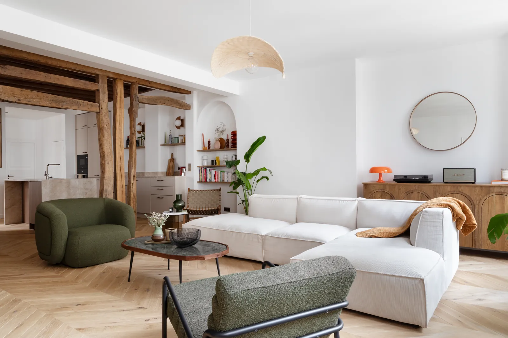
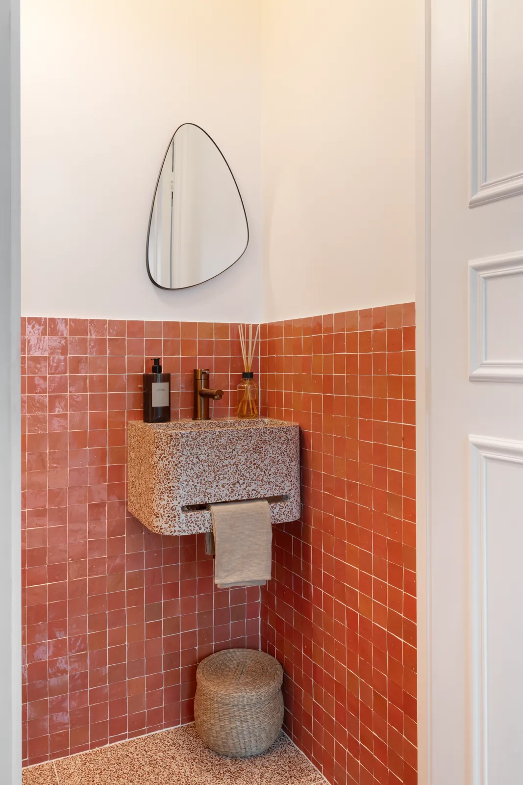
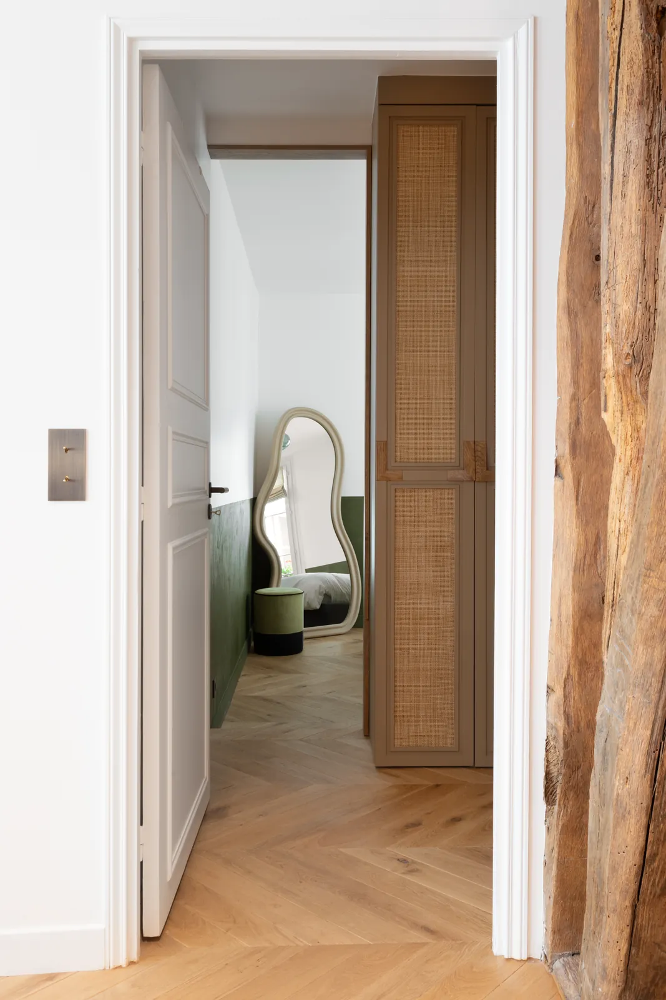

Stouls Studio / Portfolio / Appartement, Paris 9e
Appartement, Paris 9e
Un appartement sombre et mal distribué, redessiné pour que la lumière le traverse de part en part.
- Type
- Résidence principale
- Lieu
- Paris, 9e arrondissement
- Surface
- Environ 90 m²
- Intervention du studio
- Rénovation complète : conception, travaux et mobilier
L'appartement était dans son état d'origine : mal distribué, avec une cuisine très sombre. Il a été repensé d'un bout à l'autre pour relier les pièces de vie et laisser passer la lumière, autour des poteaux et des poutres en bois d'origine, laissés apparents.
Il compte aujourd'hui deux suites parentales, chacune avec sa salle de bain et son dressing, un bureau, des WC séparés, une entrée avec rangements intégrés et une grande cuisine ouverte sur le séjour. Le parquet en point de Hongrie court du séjour à la cuisine et à la chambre.
Les ouvertures ont été redessinées en arches : le passage vers la salle de bain et une niche bibliothèque dans le séjour. La chambre et la salle d'eau partagent un vert profond arrêté à mi-hauteur, et les penderies se cachent derrière des portes cannées à poignées de chêne. Les toilettes sont la seule pièce qui hausse le ton, en zellige terracotta avec une vasque en terrazzo.







Un projet comme celui-ci
Si ce projet ressemble à ce que vous avez en tête, dites-le-moi. Un lien vers cette page et deux lignes sur votre budget et votre calendrier suffisent pour commencer.
Précédent : Appartement, MeudonSuivant : Studio Mazarine, Paris 6e